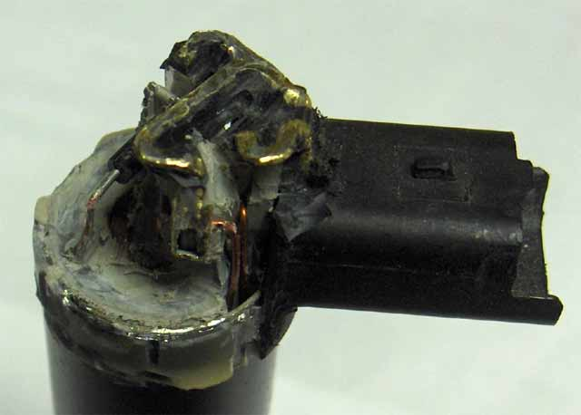
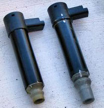
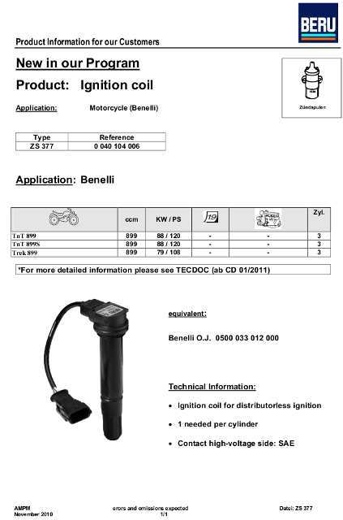

Why they fail
Posted by R1Convert - Benelliforum - 8 Apr 2007
"It does happen, bike was in for a service at KJM and one of my coil sticks had to be replaced as it was
about to fail, Glen said that this was due to the fact that the coils were not sealed coming out of the
factory on the original tre's and this leads to water ingress and the body of the coil corrodes and allows
arcing. This problem was causing the bike to almost stall as I was changing down. The middle coil is the
worst culprit as it will pick up extra moisture and crap as it is in the firing line of the front wheel."
Posted by Rusty Russ - Benelliforum - 9 Apr 2007
The coil stick problem is quite common on bikes that are here in the UK. Rain from the front wheel flicking
up, or coming into the air box and then out through the drain, SMACK above the middle plug, causes the
moisture to attack the fragile stick and then they start playing up. All new bikes supplied and serviced
bikes by us have the No2 coil stick siliconed up with some H/duty stuff, it seems to work! (on the stick
note up to now I have never replaced No1 or No3)
Air box Drain Mod.
On learning this, I re-routed the airbox drain, so that it wasted
to the front of the engine, well away from the #2 coil.
Find the drain mod here
Anatomy of an OEM Coil Stick

The picture is of Big Bad Al's dead coil after it has been disected with a Dremel.
The problem is plain to see. The 2 copper wires that join the ECU to the primary winding, can be seen
entering the coil body via a duct. This duct is not sealed. Worse, it is open all the way to the spark
plug cap.

On Al's coil, there were 2 slots in the coil cap, adjacent to the connector. You can see one of them in the
picture above. The OEM and the Valeo / JCI coils are exactly the same in this respect. Water can flow
through these slots, into the coil body and out at the spark plug.
All 3 of the coils on Engenia's Tornado had these slots sealed with tape. It took 3� years, and almost
48,000 km for this tape to fail, and a coil with it.
The tape will eventually fail because of changing air pressure in the coil/plug well. As the engine heats up,
the air pressure in the well increases, because the body of the coil is sealed to the well walls. This constant
rise & fall in pressure, as the temperature rises and falls, will weaken the tape.
Of course, if the tape has failed, and moisture is at the slot entry, that moisture will be drawn into the coil
as the air cools down. Even if the air is only humid, as the temperature falls, it will hit dew point, and
dew will form inside the coil. The coil has choice but to break down, and fail.
Symptoms of A Coil Failure
After being parked in a rainstorm, Nell started normally, travelled a couple of kilometers, then began to miss.
After a further 5 - 10 km, Nell began to run on 3 again.
Next morning she started on 2, ran for several tens of seconds caughing and spluttering, backfired and ran
on 3.
Every now and then, while running, she would drop back to 2 for a short while.
By feeling the exhausts VERY soon after startup, and running on 2, it was determined that #3 was the culprit.
Changing it almost solved the problem. She still ran rough occasionally, and would no longer get to
150 - 160 km before the fuel light came on. (City / Country riding) It became 135 - 145 km.
A second coil is suspected, but since it hasn't failed completely, it's hard to find, so all will be replaced.
An Alternative Coil
The Delphi made coil produced for the Peugeot / Citroen, part number 597094 is completely sealed. No moisture
can enter the coil body. However, it is constructed in a different manner to the Valeo coil and requires
slightly different modifications to allow use in the Tornado 900.
These modifications can be found here
The Original Alternative Coil
If you must use the original Valeo coil, Peugeot / Citroen part numbers 597077 & 597094,
the modifications for these can be found here
Another Alternative Coil
The Triumph Daytona 675 coils fit, apparently, as suggested by "slip", of the Benelliforum. The connector is different though, so you must make up an adapter.
It's also taller
and will press on the airbox.
Yet Another Alternative Coil
This one is Benelli's alternative, as used by the TNT and TreK 899. It's a Beru type ZS377, unique to Benelli, and only available through a Benelli parts distributor. It's very expensive though.
